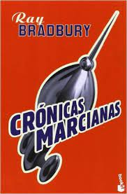

Sipnosis:
Esta colección de relatos recoge la crónica
de la colonización de Marte por parte de una
humanidad que huye de un mundo al borde de
la destrucción.

Sipnosis:
Dune relata la historia del planeta
desértico Arrakis, única fuente de
melange, la especia necesaria para el
viaje interestelar y que además garantiza longevidad
y poderes psíquicos.

Sipnosis:
Han llegado del espacio exterior, de Marte.
Equipados con terribles máquinas, los invasores
aterrizan en nuestro planeta y empiezan a
sembrar el terror y la destrucción.
Su único objetivo es conquistar la Tierra y
convertir a los humanos en sus esclavos.

Sipnosis:
La Comunidad se ha disuelto, los ejércitos del
Señor Oscuro van extendiendo cada vez más su
maléfica sombra por la Tierra Media.
Hombres, elfos y enanos unen sus fuerzas
para presentar batalla a Sauron y sus huestes